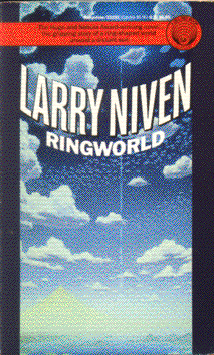

Ringworldby Larry Niven
publisher: Ballantine Books
Fiction, 342 pages | 
(book cover art, Copyright ©1970 Larry Niven)
Used with Permission. |
Return to the Book MenuPrevious|Next
Description:
A tale (a bit more fanciful than some in this collection) of
a visit to an unusual world, shaped like a giant ring. A three-footed,
two-headed cowardly alien, a needle toothed carnivore, and two humans with
a bit of luck visit this strange land to uncover its secrets.
Recommended for: explorers, xenobiologists, and mechanical
engineers.
Did-you-read questions:
Deadline: February 1, 2005.
These should be easy questions, but you should have the questions ready and keep an eye out during your reading. Each question should be answered with 1-2 sentences.
Note: these questions are not probably not the most important part of the book! Your essay will not have to cover these questions!
- What is a tasp?
- What is the name of the ship that takes the adventurers to Ringworld?
- Who is Louis mistaken for in Zignamuclickclick?
- What is Prill's full name?
- What is Fist-of-God?
Report Questions:Deadline: Peer Review Session on February 8, 2005; paper due February 10, 2005.
You should write a 3 - 4 page essay on one of the following questions. Your essay should include examples and references to the book, unless otherwise specified. Page number references are sufficient for citing material from the primary book. If you use outside materials, cite your sources in full. If you would rather write on a different topic, you may, but clear it with Mr. Howe or Ms. Sullivan first.
- How do you think life would be different living on a world that was shaped
like a ring, instead of a sphere? If earth were ring-shaped, how would
it change the way you look at things such as astronomy, politics, art,
or communications? Give examples from the book as well as your own ideas.
- The author spends a great deal of time on issues of control. Who is in
control or being controlled, and how are they doing it (or how is it being
done to them)? How does this add to or detract from the story? Is it appropriate
to what is going on, or should the author have focussed more on the adventurous
aspects of the story?
- Another theme through the novel is the idea of addiction and overstimulation.
Although the tasp is a fictional device, it is certainly rooted in such
things as illegal drugs and alcohol. Do you think that the characters'
reactions to the tasp and its effects were realistic? Do you feel that
there are aspects of this device that the author didn't explore far enough?
- This novel incorporates a lot of real physics with a lot of science that
is a bit far-fetched. Where do you think the line could be drawn between
possible and impossible in this story? Pick two or three objects, ideas
or technologies that appear in the novel that are near the edge of what
is possible, and describe which side you think they fall on.
Graphic and Presentation:
Deadline: February 21 - March 3, 2005.You will give a 10 minute presentation on both of the following:
- Convince your peers that they should (or should not) read this book. (This may include a brief summary of the book.) Give examples of what was cool or worthwhile in the book, and what you got out of it (or didn't).
- Describe a (realistic) science idea that you learned about in this book, citing information from at least 2 external sources (other than the dictionary). If you would like help choosing or understanding an idea from your book, you are invited to come talk to Mr. Howe or Ms. Sullivan.
Note: This presentation should not be just a reading of your paper!Along with this presentation, you should have a graphic that will go with it. A Power Point presentation is recommended, but if you have a special idea for a something else, such as a model, an original video presentation, or a well done drawing/ painting/ sculpture/ etc., you may do so, provided it involves a similar level of effort and polish. Speak to Mr. Howe or Ms. Sullivan first if you are considering an alternate graphic format to the Power Point.
Return to the Book MenuPrevious|Next